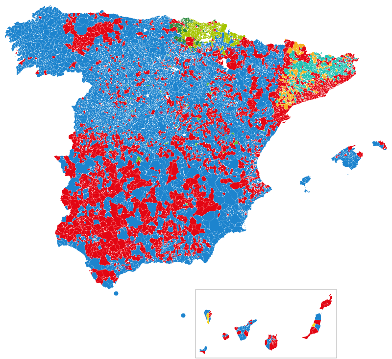
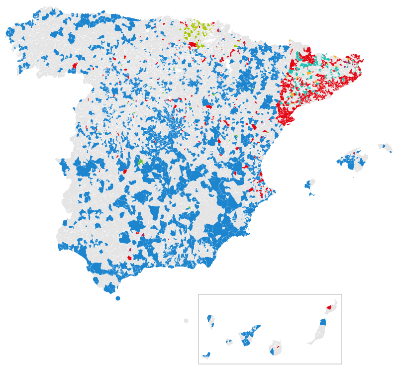

Tema · Generales 1977-2023
Resultados de las elecciones por municipio
Quién ganó en cada pueblo y ciudad de España, cómo ha cambiado desde 1977 y dónde consultar el voto de cada barrio
Por Nacho G. del Álamo · Actualizado el

DatoEn las generales de 2023 el PP fue la lista más votada en 4.628 de los 8.131 municipios de España, y el PSOE, en 2.640. Junts / CiU, en 297, EH Bildu / Amaiur, en 237, ERC, en 164. Los 3.133 municipios de más de 1.000 habitantes tienen página propia con las 16 generales desde 1977 y el voto de cada sección censal.
Buscar un municipio en el mapa
El mapa de 2023, municipio a municipio
DatoCada municipio, del color del partido más votado en las generales del 23 de julio de 2023. La mayoría de los municipios son pequeños: el mapa pesa más el campo que las ciudades, donde vive la mayor parte del censo.

PP PSOE Vox Sumar / Podemos / IU ERC Junts / CiU PNV EH Bildu / Amaiur Coalición Canaria
Los que cambiaron de color en 2023
DatoEn 2.558 municipios el partido más votado en 2023 no fue el de noviembre de 2019. Los cambios más frecuentes: de PSOE a PP, en 1.420; de ERC a PSOE, en 358; de Vox a PP, en 250; de ERC a Junts / CiU, en 108.

PP PSOE Vox Sumar / Podemos / IU ERC Junts / CiU PNV EH Bildu / Amaiur Sin cambio
Los que siempre votan igual
DatoDe los 7.845 municipios con resultado en las 16 generales, 247 han votado siempre como primera fuerza a la misma familia política: 192 a PSOE, 28 a PNV, 14 a Junts / CiU, 13 a PP. Los municipios que nunca han dado la victoria al PSOE o a la derecha estatal están en dónde nunca ha ganado el PSOE y dónde nunca ha ganado la derecha.
Los municipios más poblados que ganó cada partido
DatoPara cada partido, el número de municipios donde fue el más votado en 2023 y los tres más poblados de ellos.
- PP (4.628 municipios): Madrid, València, Zaragoza
- PSOE (2.640 municipios): Barcelona, Las Palmas de Gran Canaria, Bilbao
- Junts / CiU (297 municipios): Vic, Banyoles, Cassà de la Selva
- EH Bildu / Amaiur (237 municipios): Durango, Zarautz, Arrasate/Mondragón
- ERC (164 municipios): Moià, Les Borges Blanques, Bellpuig
- PNV (76 municipios): Getxo, Leioa, Galdakao
- Sumar / Podemos / IU (50 municipios): Trebujena, Nueva Carteya, Esporles
- Vox (36 municipios): Pioz, Ontígola, Puente de Génave
Cómo encontrar tu municipio
- Escribe el nombre del municipio, o tu calle, en el buscador del mapa: verás el resultado de cada sección y, al pulsar, la ficha del municipio.
- O entra en su provincia en la tabla de abajo: cada página de provincia lista sus municipios de más de 1.000 habitantes, con enlace a la página de cada uno.
- En la página de cada municipio están el resultado de 2023, la serie desde 1977, las municipales frente a las generales y, si tiene más de una sección, el voto barrio a barrio.
Municipios por provincia
DatoNúmero de municipios de cada provincia, cuántos tienen página propia (más de 1.000 habitantes o capital) y en cuántos fue la lista más votada cada partido en 2023.
| Provincia | Municipios | Con página | Ganó el PP | Ganó el PSOE | Ganó otro |
|---|---|---|---|---|---|
| A Coruña | 93 | 93 | 91 | 2 | 0 |
| Albacete | 87 | 43 | 44 | 43 | 0 |
| Alicante | 141 | 91 | 90 | 47 | 4 |
| Almería | 103 | 52 | 69 | 34 | 0 |
| Araba/Álava | 51 | 22 | 6 | 9 | 36 |
| Asturias | 78 | 60 | 38 | 40 | 0 |
| Ávila | 248 | 18 | 218 | 28 | 2 |
| Badajoz | 165 | 101 | 36 | 129 | 0 |
| Barcelona | 311 | 220 | 0 | 198 | 113 |
| Bizkaia | 112 | 75 | 0 | 14 | 98 |
| Burgos | 371 | 25 | 306 | 62 | 3 |
| Cáceres | 223 | 66 | 75 | 147 | 1 |
| Cádiz | 45 | 42 | 19 | 25 | 1 |
| Cantabria | 102 | 65 | 85 | 17 | 0 |
| Castellón/Castelló | 135 | 48 | 87 | 43 | 5 |
| Ceuta | 1 | 0 | 1 | 0 | 0 |
| Ciudad Real | 102 | 54 | 54 | 48 | 0 |
| Córdoba | 77 | 64 | 26 | 49 | 2 |
| Cuenca | 238 | 31 | 128 | 107 | 3 |
| Gipuzkoa | 88 | 56 | 0 | 6 | 82 |
| Girona | 221 | 93 | 0 | 81 | 140 |
| Granada | 174 | 101 | 75 | 99 | 0 |
| Guadalajara | 288 | 34 | 161 | 119 | 8 |
| Huelva | 80 | 54 | 23 | 57 | 0 |
| Huesca | 202 | 28 | 136 | 65 | 1 |
| Illes Balears | 67 | 61 | 54 | 10 | 3 |
| Jaén | 97 | 77 | 30 | 66 | 1 |
| La Rioja | 174 | 29 | 140 | 33 | 1 |
| Las Palmas | 34 | 33 | 8 | 25 | 1 |
| León | 211 | 58 | 149 | 62 | 0 |
| Lleida | 231 | 68 | 2 | 79 | 150 |
| Lugo | 67 | 57 | 63 | 4 | 0 |
| Madrid | 179 | 135 | 158 | 19 | 2 |
| Málaga | 103 | 74 | 47 | 53 | 3 |
| Melilla | 1 | 0 | 1 | 0 | 0 |
| Murcia | 45 | 43 | 41 | 4 | 0 |
| Navarra | 272 | 86 | 113 | 60 | 99 |
| Ourense | 92 | 63 | 88 | 4 | 0 |
| Palencia | 191 | 18 | 171 | 20 | 0 |
| Pontevedra | 61 | 59 | 56 | 5 | 0 |
| Salamanca | 362 | 27 | 328 | 32 | 2 |
| Santa Cruz de Tenerife | 54 | 54 | 34 | 18 | 2 |
| Segovia | 209 | 24 | 187 | 20 | 2 |
| Sevilla | 106 | 101 | 18 | 84 | 4 |
| Soria | 183 | 11 | 161 | 21 | 1 |
| Tarragona | 184 | 85 | 1 | 114 | 69 |
| Teruel | 236 | 17 | 166 | 65 | 5 |
| Toledo | 204 | 119 | 131 | 70 | 3 |
| Valencia/Valéncia | 266 | 185 | 130 | 134 | 2 |
| Valladolid | 225 | 39 | 189 | 31 | 5 |
| Zamora | 248 | 17 | 214 | 34 | 0 |
| Zaragoza | 293 | 57 | 180 | 104 | 9 |
Piezas municipio a municipio
- Actualidad · 13 de octubre de 2026La aceituna de mesa, por debajo de coste: en sus dos grandes comarcas, el PP no ganó en ninguno de los 23 pueblos en 2023
- Actualidad · 8 de octubre de 2026De 5.990 municipios a 762 en tres años: así se hundió UCD, y así cayó Ciudadanos en solo seis meses
- Actualidad · 8 de octubre de 2026Trebujena dio al PCE dos de cada tres votos en 1977 y aún da a Sumar uno de cada dos
- Actualidad · 8 de octubre de 20266 de cada 10 municipios tienen menos electores que en 1977; Las Rozas tiene 14 veces más
- Actualidad · 8 de octubre de 2026En 1982 el PSOE pasaba del 60 % en al menos 748 municipios; en 2023, en 67
- Actualidad · 8 de octubre de 202616 de 16: Plasencia ha votado al ganador en todas las elecciones generales desde 1977
- Actualidad · 8 de octubre de 2026Barcelona, Terrassa o Dos Hermanas: 864 municipios donde la derecha estatal nunca ha ganado unas generales
- Actualidad · 8 de octubre de 2026Pozuelo, Getxo o Ávila: 1.932 municipios donde el PSOE nunca ha ganado unas generales
- Actualidad · 8 de octubre de 2026Dos Hermanas ha votado al PSOE en las 16 generales; solo 11 pueblos, ninguno grande, lo han hecho con el PP
- Actualidad · 8 de octubre de 2026Siete partidos distintos han ganado en Mont-roig del Camp: ha cambiado 11 veces de ganador en 16 generales
- Actualidad · 8 de octubre de 2026Donde se votaba a UCD y AP en 1977 se vota a PP y Vox en 2023; el mapa de Vox no se parece al de AP
Más datos
- Elecciones generales del 29N de 2026
- Participación electoral por barrio
- Mapa electoral de España por sección censal
Método y fuentes
- Datos
- Resultados oficiales por mesa y por municipio del Ministerio del Interior (Infoelectoral) para las elecciones al Congreso de 1977 a 2023, sin el voto de los residentes en el extranjero (CERA), que no se asigna a ningún municipio. Renta neta por unidad de consumo de cada sección censal: Atlas de Distribución de Renta de los Hogares del INE (2023).
- Cómo se calcula
- Porcentajes sobre voto válido (candidaturas más votos en blanco), sumando votos, no promediando porcentajes. Participación: votantes entre censo. Los grupos de renta reúnen secciones con el mismo censo electoral cada uno. Agrupación de partidos y límites: metodología del mapa.
- Datos abiertos
- Todas las cifras de esta página salen de las descargas del mapa (CSV, licencia CC BY 4.0).
- Autoría y revisión
- Nacho G. del Álamo. Publicado el 13 de octubre de 2026; actualizado el 21 de octubre de 2026. Política editorial · Correcciones